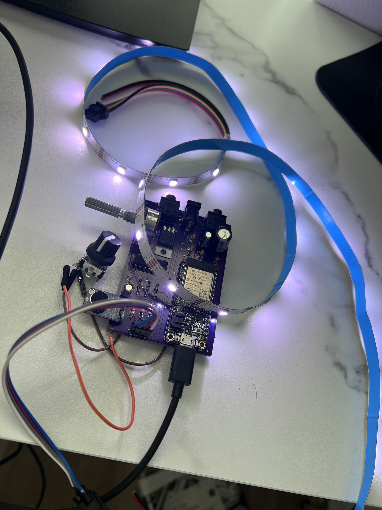

About the Project
|  |
The Audiolux bridges those hard of hearing with music. |
The AudioLux project aims to address the challenge of inclusivity for the deaf and hard of hearing (DHH) communities in public events by enhancing accessibility in performances such as concerts.
The Audiolux is targeted for public event coordinators, but the device is easy to manufacture and the Nanolux firmware is open source.
By creating innovative solutions to identifying traits of music such as vowel detection, pitch or frequency detection, drum detection, and many more, Audiolux seeks to create a more inclusive environment where audio-visual experiences are accessible to all individuals, regardless of their hearing abilities.
How is Audiolux Different?
Our project is open source, enabling anyone to build and customize their own kit to suit their needs.
We have encapsulated features in distinct functions, making them easy for developers to call as needed.
Additionally, our comprehensive documentation ensures excellent readability and maintainability which makes this project accessible to anyone interested.